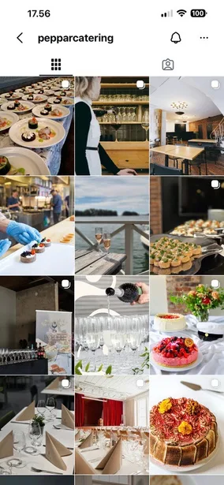

OmbrandingVisuell identitetWebbplats
Nytt namn, ny känsla: Peppar Catering
Kårkaféerna
Jag ledde ombrandingen av Kårkaféernas cateringverksamhet från första planen till lansering. Målet var ett varumärke som känns lika bra som maten smakar, och en digital närvaro som matchar.
- Nytt namn och visuell identitet
- Ny tvåspråkig webbplats, pepparcatering.fi
- Planerade och ordnade en fotografering
- Nystart i sociala medier med nytt innehåll
